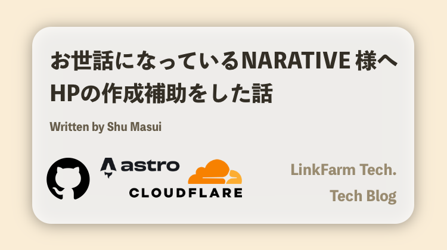
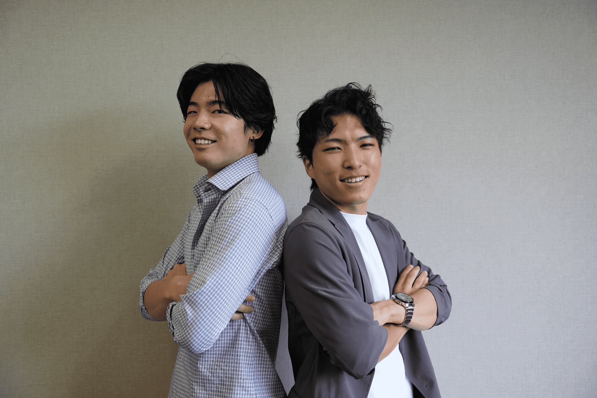
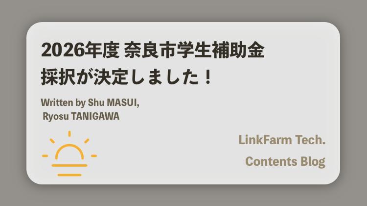
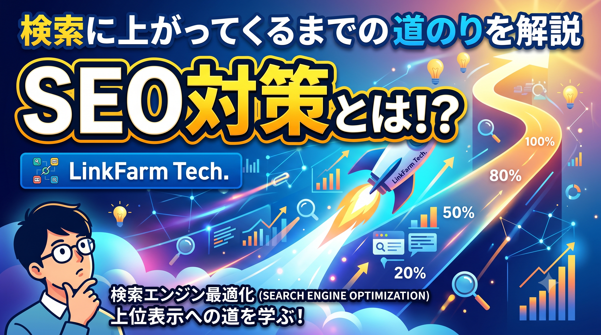
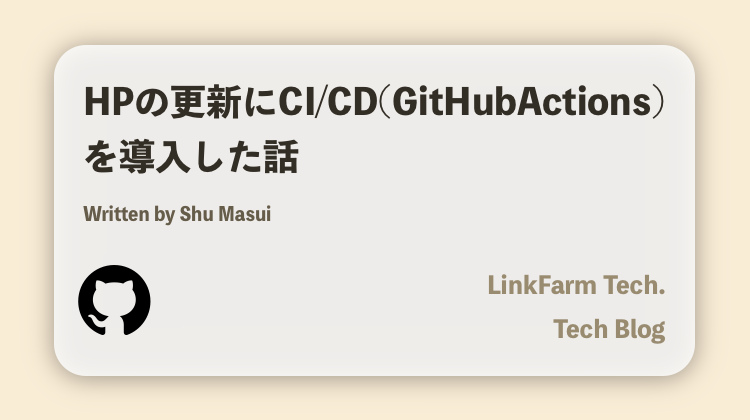
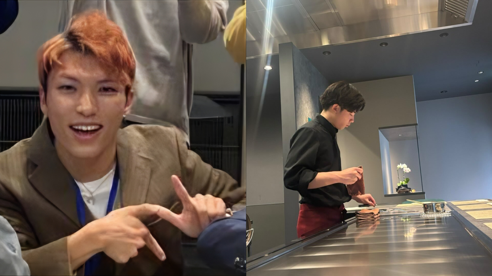

一般社団法人NARATIVE様の公式Webサイト（narative.org）制作をサポートさせていただきました！
奈良をフィールドに学生と地域を繋ぐ「一般社団法人NARATIVE」様の公式HP作成にあたり、LinkFarm Tech.がWebデザイン・技術アシストを行いました！
§ 04 JOURNAL
リアルタイムな活動の様子や、作物の成長記録を配信しています。

奈良をフィールドに学生と地域を繋ぐ「一般社団法人NARATIVE」様の公式HP作成にあたり、LinkFarm Tech.がWebデザイン・技術アシストを行いました！

NARATIVE 最初の定期交流会に参加させていただきました！

6月頭より取り組んでいました、補助金申請業務！ついに採択という形で幕を閉じました！

記事の分類と検索性を上げるため、コンテンツコレクションにタグを追加しました。

GitHub Actions からの自動ビルドとデプロイを整備し、公開までの手順を一本化しました。

6月頭から準備してきた申請書類を、無事に提出しました！